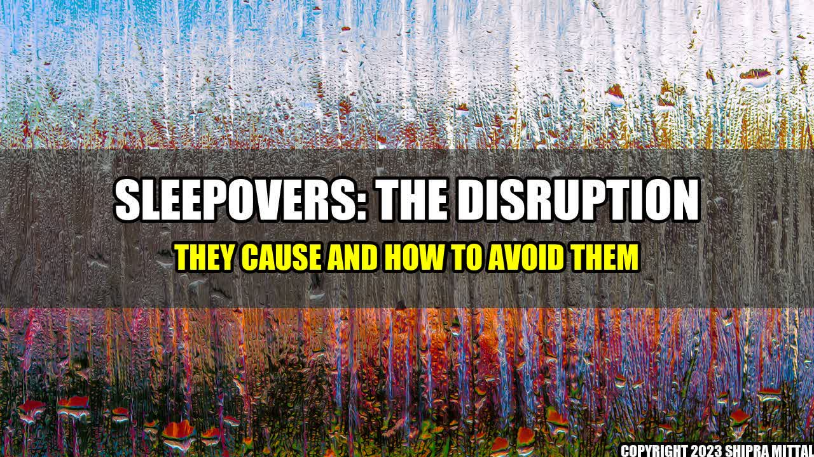

Sleepovers Totally Blow Up Our Family Life, But I'm Not Sure I Can Escape Them

When I was a kid, sleepovers were a blast. I'd pack my sleeping bag and head to my friend's house, where we'd stay up late, talk about boys, and then fall asleep in a fort made of blankets. But now that I'm a parent, I dread sleepovers. I know how much disruption they cause to our family life, but I'm not sure I can avoid them altogether.
The Disruption Sleepovers Cause
It's not just the lack of sleep that disrupts our family routine when we have sleepovers, it's everything that comes along with it. Here are some quantifiable examples:
- The house is a mess: When kids come over for a sleepover, they bring their stuff with them - pillows, blankets, toys, games, and food. And while they're playing, they leave a trail of mess behind them. The house ends up looking like a disaster zone, and it takes days to clean up.
- Noise levels are high: Kids are naturally loud, but when you add the excitement of a sleepover into the mix, things can get really noisy. You can forget about having a quiet night to yourself when sleepovers are happening.
- Bedtimes go out the window: If you have kids staying over, you can forget about getting them to bed at a reasonable hour. They're too busy having fun to be bothered with sleep. And if your kids are the ones staying over, they'll be exhausted and grumpy the next day.
The You Can't Resist
Sleepovers: The Good, The Bad, and The Ugly
- Plan ahead: If sleepovers are going to happen, make sure you've got a plan in place. Set some ground rules, figure out activities to keep the kids entertained, and make sure everyone knows what's expected of them.
- Keep it low-key: The simpler the sleepover, the better. Instead of trying to cram in as many activities as possible, focus on one or two things that the kids will enjoy. And keep the noise levels down after a certain time.
- Ban sleepovers: If all else fails, you can always ban sleepovers altogether. It might lead to some disappointed kids, but it could also save you a lot of stress and disruption.
and Case Studies
One mom I know banned sleepovers after she had a particularly disastrous experience. Her daughter invited four friends over, and they completely trashed the house. They spilled soda all over the carpet, broke a lamp, and even drew on the walls. The mom spent the next week cleaning up the mess and trying to get the stains out of the carpet. She vowed never to let it happen again.
Practical Tips
- Set limits on the number of kids allowed to stay over
- Make sure you have plenty of snacks on hand
- Have a game plan for the morning - maybe a special breakfast or activity to keep the kids occupied until their parents come to pick them up
Reference URLs, Hashtags and SEO Keywords
Reference URLs: https://www.parentingscience.com/sleepovers-are-bad-for-kids.html, https://www.today.com/parents/can-sleepovers-really-be-toxic-tourture-t103832
Hashtags: #SleepoversGoneWrong #FamilyDisruption #BanningSleepovers #KeepItSimple
SEO Keywords: Sleepovers, Parenting, Family Life, Disruption, Banning
Article Category: Family Life/Parenting
Akash Mittal Tech Article
Share on Twitter Share on LinkedIn